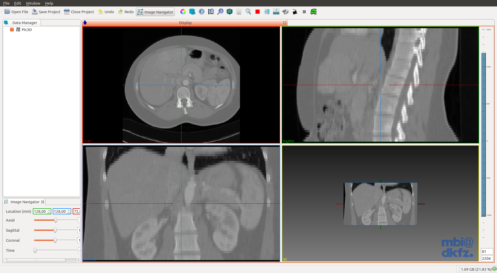

Prerequisites
- GIT
- CMake (version 3.2 or higher. Current stable 3.3)
- Qt 5.x
- Make sure that you select a Qt version which provides the right OpenGL-enabled packages for your architecture and compiler
Install dependencies.:
- Ubuntu:14.04.:
$ sudo apt-get update && sudo apt-get install -y \
software-properties-common \
&& sudo apt-add-repository multiverse \
&& sudo apt-get update \
&& sudo apt-get install -y \
bison build-essential curl git libarchive-dev libbz2-ocaml-dev libcurl4-openssl-dev \
libexpat-ocaml-dev libfaac-dev libmp3lame-dev libopencore-amrnb-dev libopencore-amrwb-dev \
libqt5svg5-dev libqt5webkit5-dev libqt5xmlpatterns5-dev libtheora-dev libtiff5-dev \
libvorbis-dev libvpx-dev libwrap0-dev libxi-dev libxmu-dev pkg-config qt5-default \
qtscript5-dev qttools5-dev qttools5-dev-tools vim wget yasm
- Ubuntu:15.04.:
$ sudo apt-get update && sudo apt-get install -y \
software-properties-common \
&& sudo apt-add-repository multiverse \
&& sudo apt-get update \
&& sudo apt-get install -y \
bison build-essential curl git libarchive-dev libbz2-ocaml-dev libcurl4-openssl-dev \
libexpat1-dev libfaac-dev libmp3lame-dev libopencore-amrnb-dev libopencore-amrwb-dev \
libqt5svg5-dev libqt5webkit5-dev libqt5xmlpatterns5-dev libtheora-dev libtiff5-dev \
libvorbis-dev libvpx-dev libwrap0-dev libxi-dev libxmu-dev python-dev pkg-config \
qt5-default qtscript5-dev qttools5-dev qttools5-dev-tools vim wget yasm
- Ubuntu:14.04 and Ubuntu:15.04.:
# OpenCL for Intel/AMD:
$ sudo apt-get install ocl-icd-opencl-dev
# OpenCL for Nvidia:
$ sudo apt-get install nvidia-opencl-icd-XXX
# Where XXX is the version. Current 346
Build Cmake 3.3.0.:
$ wget -c http://www.cmake.org/files/v3.3/cmake-3.3.0.tar.gz
$ tar xvzf cmake-3.3.0.tar.gz && cd cmake-3.3.0
$ ./bootstrap --prefix=/usr --system-libs --mandir=/share/man --no-system-jsoncpp \
--docdir=/share/doc/cmake-3.3.0 --qt-gui
$ make && sudo make install
Build FFmpeg, we need it for OpenCV.:
$ git clone https://github.com/FFmpeg/FFmpeg.git
$ cd FFmpeg
$ ./configure --enable-gpl --enable-libfaac --enable-libmp3lame --enable-libopencore-amrnb \
--enable-libopencore-amrwb --enable-libtheora --enable-libvorbis --enable-libvpx \
--enable-nonfree --enable-version3 --enable-x11grab --enable-shared --enable-pic
$ make && sudo make install
Build MITK.:
$ git clone http://git.mitk.org/MITK.git
$ mkdir MITK-build && cd MITK-build
$ ccmake ../MITK


- Note: in Ubuntu:14.04 you CAN'T select the option 'MITK_USE_Python', because It needs Qt >= 5.3
- Tips:
- For a complete installation, press 't' to toggle the advance view. You may select all the options you desire, like compile with all applications and plugins.
- Also, if you selected
MITK_USE_SYSTEM_PYTHON, you may want to changePYTHON_EXECUTABLE,PYTHON_INCLUDE_DIRandPYTHON_LIBRARYto your respective installation. For now, It's not possible to use Python 3, so you'll have to use Python2.7.
# Press 'c' to configure and 'g' to generate and exit.
$ make
# I do NOT recommend running `make` with the option `-j4`. You'll get dependency related errors during the build.
# This last command will take several hours, so go and take a walk (in another city) :)
If you encounter any problems building MITK, try building your self some of Its dependencies.:
Build Boost if needed.:
- Download Boost from the official webpage Boost C++ Libraries.
$ tar --bzip2 -xf /path/to/boost_1_XX_X.tar.bz2 && cd boost_1_XX_X #Current `boost_1_58_0`
$ ./bootstrap.sh --prefix=/usr/local --with-python=/usr/bin/python2 #It doesn't work with Python3
$ mkdir ../boost-build
$ sudo ./b2 -q --build-dir=../boost-build variant=release install
Build OpenCV if needed.:
$ sudo apt-get install build-essential libgtk2.0-dev pkg-config libavcodec-dev libavformat-dev \
libswscale-dev python-dev python-numpy libtbb2 libtbb-dev libjpeg-dev libpng-dev libtiff-dev \
libjasper-dev libdc1394-22-dev
$ git clone git@github.com:Itseez/opencv.git
$ mkdir opencv-build && cd opencv-build
$ ccmake ../opencv
# Press 'c' to configure and 'g' to generate and exit.
$ make -j4
# Where *4 is the number of CPU Threads.
# The last command will take several minutes to complete.
$ sudo make install
Build VTK if needed.:
$ sudo apt-get install tk-dev
$ git clone git://vtk.org/VTK.git
$ mkdir VTK-build && cd VTK-build
$ ccmake ../VTK
# Press 'c' to configure and 'e' to continue.
# Select desired options.
# VTK_WRAP_PYTHON ON
# VTK_QT_VERSION 5
# ...
# Press again 'c' to configure and 'e' to continue.
# Press 'g' to generate and exit.
$ make -j4
$ sudo make install
Build SOFA if needed.:
$ git clone git://scm.gforge.inria.fr/sofa/sofa.git
$ sudo apt-get install build-essential libqt4-dev libqt4-opengl-dev libglew-dev freeglut3-dev \
libpng-dev ccache zlib1g-dev python2.7-dev libxml2-dev libcgal-dev libblas-dev liblapack-dev \
libsuitesparse-dev libboost-all-dev libassimp-dev liboce-foundation-dev
$ mkdir sofa-build && cd sofa-build
$ CC="gcc" CXX="g++" cmake -DCMAKE_BUILD_TYPE=Release ../sofa
$ cmake .
$ make -j4
Build GDCM if needed.:
$ sudo apt-get install swig
$ git clone --branch release git://git.code.sf.net/p/gdcm/gdcm
$ mdkir gdcm-build && cd gdcm-build
$ ccmake ../gdcm
# Press 'c' to configure and 'g' to generate and exit.
$ make
$ sudo make install
Using MITK
$ cd ~/Downloads && wget -c http://mitk.org/download/tutorial-data/Pic3D.nrrd
$ /path/to/MITK-build/bin/MitkWorkbench

- Open the downloaded image in
~/Downloads
